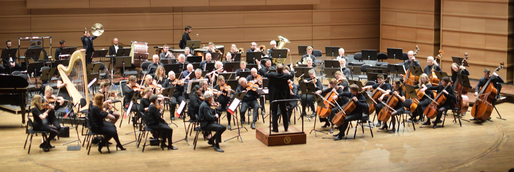

OM OSS
BLI MED
SESONGPROGRAM
KONTAKT
KONSERTDATABASEN
ANNET
LENKER
GRATROSANDELEN
PLAKATER OG PROGRAM

NESTE KONSERT
Tid:
18. oktober 2020 kl 18.00
Sted:
Universitetets aula, Oslo
Program
P. Tsjaikovskij:
Strykeserenade i C-dur, op. 48
R. Schumann:
Cellokonsert i A-moll, op. 129
C. Gounod:
Petite Symphonie
E. Bozza:
Ouverture pour une cérémonie
Dirigent
Kjell Seim
Solist
Daniel Thorell (cello)
Billetter
Kun billetter via Ticketco:
https://uso.ticketco.events/no/nb/e/hoestkonsert_med_universitetets_symfoniorkester